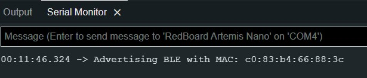

Lab 2: Bluetooth
Zhiyuan Zhang
Introduction
The objective of this laboratory is to create a means of communication between computer and the Artemis board utilizing Bluetooth. To accomplish this, we will be utilizing the Arduino programming language on the Artemis board and Python inside a Jupyter notebook on the computer end. Additionally, we will establish framework for transmitting data over Bluetooth.
Lab Procedure And Result
1. Prelab
After following the step to install the python, virtual environment and required package, we can use the virtual environment and Jupyter lab server by the following commands in the terminal under the project directory .\venv\Scripts\activate and jupyter lab. Those processes are the setup for the computer end. As for the Artemis Board Setup, we run the sketch code ble_arduino.ino and get the mac address. The result is shown in the figure below:
The codebase has two directories: ble_ardunio and ble_python. The ble.ardunio contains ble_ardunio.io is the main code that the Artemis Board will run, along with three class definition files that support sending messages to the computer and receiving the commands from the computer. The ble_python contains the demo.ipynb which is the main Jupyter Notebook we run. Other files contain functions that allow the computer to send commands and receive messages from the board.
2. Configurations
To connect the board to the computer, generating new UUID BLE_UUID_TEST_SERVICE and the UUIDS for BLE_UUID_RX_STRING, BLE_UUID_TX_FLOAT and BLE_UUID_TX_STRING by using the function uuid4(). After changing UUIDS for the board, It is also required to change the mac address and UUIDs for corresponding characteristics in the connection,yaml. The result is shown below:
The video below shows that the demo.ipynb ar able to run all the cell after configuration:
3. Send Echo Command
The purpose of the Echo function is to receive a string from the computer on the Artemis board and then respond with an enhanced string that is printed on both the computer side and the Artemis Serial Monitor. This is demonstrated in the video below.
The code in the ble_arduino is shown below:
4. Get Time Command
The second task is to send a GET_TIME_MILLIS command to the Artemis board and obtain a string characteristic such as "T:87373", as illustrated in the video. In addition to the functions provided by the Estring class, the millis() function is used to obtain the current time
The code in the ble_arduino is shown below:
5. Notification Handler
In this task, A notification handler is needed to receive the message from the Artemis board whenever the board sent the computer a new message. When a message is received, the handle_notification function is called to print the message. The result is show in the image below:
The code snippet is shown below:
6.GET_TIME_MILLIS
In this task, I implemented the command case GET_ TEMP_5s at the Artemis board side and used the notification handler nodtifi_handler2(uuid, s) on the computer end to receive the temperature sent by the Artemis board once per second for 5 s The result shown in the video below:
The code snippet for the Artiemis board is shown below:
7.GET_TIME_MILLIS_rapid
For the Get_Temp_5s_RAPID command , it is similar to the previous GET_Temp_5s. I set the interval of each loop to 100ms by using the delay() function, so that 5*1000/100 =50 samples can be generated in 5 second . The result is shown in the video below:
The code for Get_Temp_5s_RAPID command is shown below:

8.Limitations
The Artemis board has 384 kB of RAM, which can store 384,000 bytes of data. Since the data is sampled at 16 bits per sample, this means that the board can store 384,000 / 2 = 192,000 16-bit samples. If the data is sampled at 150 Hz, then each second of data requires 150 * 2 = 300 bytes of storage (since each sample is 16 bits, or 2 bytes). Therefore, the board can store 384,000 / 300 = 1280 seconds of data. If we want to store 5 seconds of data at a time, then we can store 1280 / 5 = 256 flows of data. Each flow would consist of 5 seconds of 16-bit values taken at 150 Hz.
9.Additional task 1
To calculate the data rate for different reply sizes, I set up a callback handler function called send_string(uuid,s), which will continuously return the data rate from 1Bytes to 140Bytes. The data rate is calculated by the function (length of message/(receiving_time- sending_time). Additionally, it will store data rates in a dictionary in every round. The code snippets are shown below:
After running the command, The data rates for the reply message size from 1-140 bytes are shown below:
Despite the fluctuations in the graph above, we can see an increasing trend as the size of the reply message load gets larger. Therefore, it’s reasonable to conclude that the larger replies help to reduce the overhead and the short packets introduce a lot of overhead since the data rate is low.
9.Additional task 2
For the reliability test, I changed the data rate by changing the interval for delay function in the command function RELIBILITY. Because for smaller intervals, the data rate is higher,I set up the interval time to 1000 at the beginning and reduce 10 for every round. In the handler function, I record the reply message received by the computer and compare it with the sending message in the serial monitor. The result in the video below shows that no message dropped when the data rate is high, Therefore, the transmission is 100% reliable.